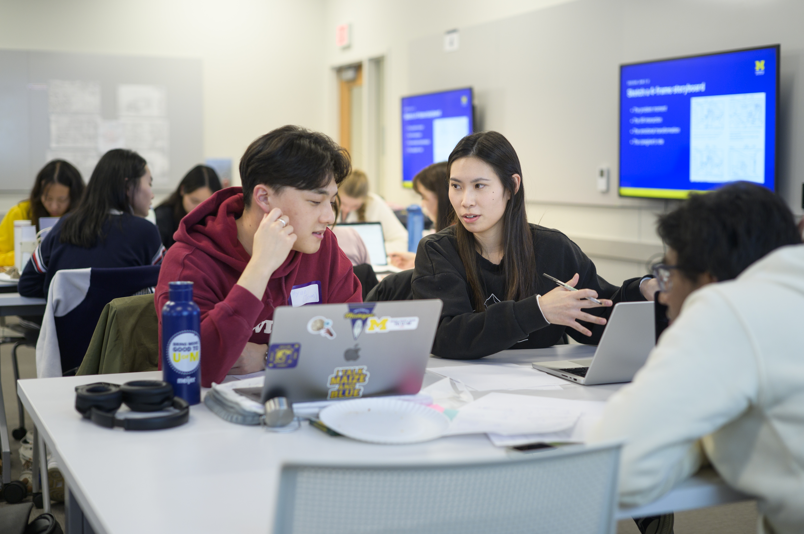

Partner Communication
Draft clear, professional outreach to launch working relationships.

First impressions shape the trajectory of a partnership. The starting phase is where abstract project ideas turn into structured, professional commitments. By establishing clear team contracts, co-creating agendas, and aligning on project scope early, you build psychological safety within your team and trust with your client. Learning how to navigate early ambiguity is one of the most valuable professional capabilities you will gain at UMSI.

Draft clear, professional outreach to launch working relationships.
Structure productive kickoff meetings that define roles and project bounds.
Document team commitments and scope agreements shared by all stakeholders.
Plug-and-play email templates for first contact with clients and partners.
Step-by-step structure for running a professional kickoff call.
Principles for building reciprocal, respectful community relationships.
Standard guidelines for managing expectations and deliverables.
Formal contract establishing roles between student teams and ELO.
Overview of key milestones, deadlines, and submission dates.